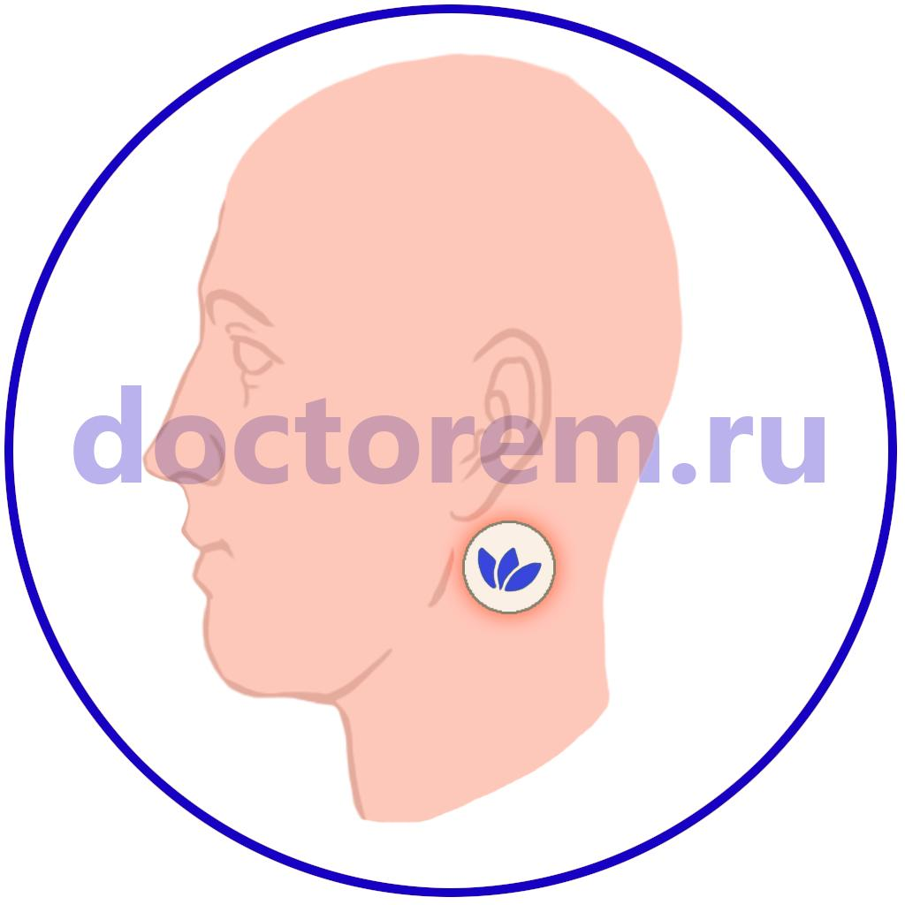
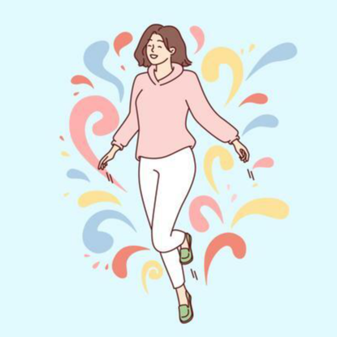
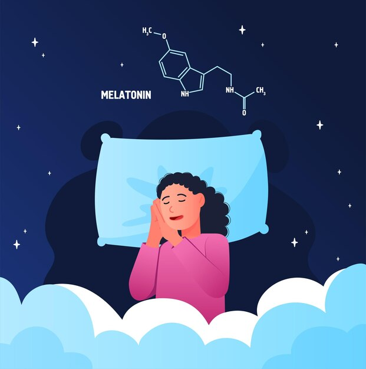
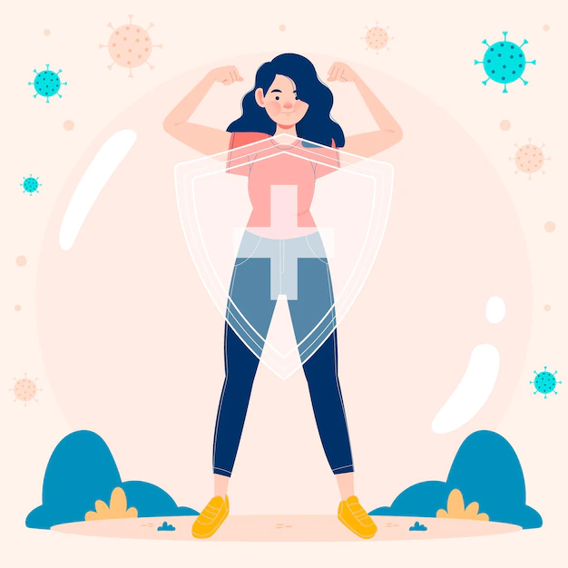
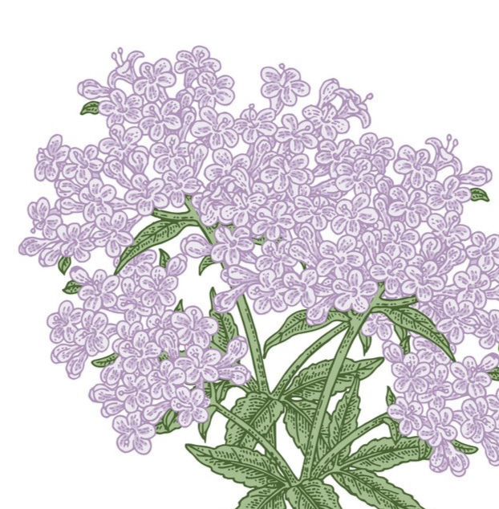
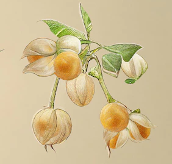
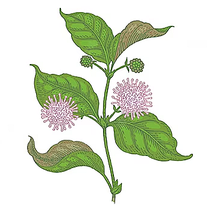

Epifiz Plus
2000 р.
ОПИСАНИЕ:
Epifiz Plus - обладает уникальным составом целебных компонентов, оказывающих комплексное воздействие на многие функции организма: в первую очередь на улучшение состояния нервной системы, циркадные биоритмы, в борьбе с паническими атаками и депрессиями.ОБЛАСТЬ ПРИМЕНЕНИЯ:
- помогает при проблемах с бессоницей;
- при психических заболеваниях;
- при депрессиях;
- при головных болях и мигрени;
- укрепляет нервную систему.
СРОК ЭФФЕКТИВНОГО ВОЗДЕЙСТВИЯ:
24 часа с момента нанесения.СОДЕРЖИМОЕ УПАКОВКИ:
30 пластырей круглой формы диаметром 3 сантиметра.СОСТАВ АКТИВНОГО ВЕЩЕСТВА:
ЗОНЫ НАНЕСЕНИЯ:
Под мочкой уха рядом с верхней частью нижней челюсти.

ОПИСАНИЕ АКТИВНЫХ ЭЛЕМЕНТОВ

5-HTP (5-гидрокситриптофан)
- это аминокислота, которая участвует в образовании серотонина и триптофана. Серотонин и триптофан поддерживают работу нервной системы: нормализуют настроение и биоритмы, помогают справиться со стрессом, способствуют повышению работоспособности и улучшению памяти, ускоряют адаптацию при смене часовых поясов. 5-HTP называют натуральным антидепрессантом, который не вызывает привыкания и имеет мягкое действие, благодаря естественному для человека составу.Гидрокситриптофан 5-HTP играет важную роль в неврологических и метаболических процессах. Он может помочь в борьбе с депрессией, состояниями тревожности и паники, нарушениями сна, ожирением, миоклонусом и серотониновым синдромом. Биосинтез 5-HTP необходим для образования мелатонина - гормона сна, который регулирует режим сна и бодрствования (циркадные ритмы человека).

Мелатонин
- это естественный гормон, который мозг выделяет в ответ на изменение освещения. Он помогает регулировать внутренние часы организма, сигнализируя о том, что пора ложиться спать.Согласно растущему количеству исследований, гормон сна также может помочь в борьбе с симптомами менопаузы, облегчить боль и укрепить здоровье сердца и иммунитет. Мелатонин помогает поддерживать циркадные ритмы организма - внутренние часы нашего тела. Он играет жизненно важную роль как в засыпании, так и в правильном пробуждении.

Магний
- природный транквилизатор и антистрессовый минерал. Магний участвует во многих процессах, происходящих в организме - в выработке энергии, усвоении глюкозы, передаче нервного сигнала, синтезе белков, построении костной ткани, регуляции расслабления и напряжения сосудов и мышц. Он оказывает успокаивающее действие, снижая возбудимость нервной системы и усиливая процессы торможения в коре головного мозга, выступает как противоаллергический и противовоспалительный фактор, защищает организм от инфекции, участвуя в выработке антител, играет значительную роль в процессах свертываемости крови, регуляции работы кишечника, мочевого пузыря и предстательной железы.Масло розы
- обладает антисептическим, противовирусным, противогрибковым, противовоспалительным, кровоочищающим и вяжущим свойствами. Оно способно стимулировать менструацию и нормализовать сердечный ритм. Эфирное масло розы является афродизиаком – веществом, стимулирующим половое влечение и половую активность.

Валериана лекарственная
- антибактериальное, антигельминтное, антистрессовое, ветрогонное, гипотензивное, диуретическое, детоксикационное, желчегонное, общеукрепляющее, противорвотное, седативное, спазмолитическое, тонизирующее, успокаивающее средство.Лаванда
- самая знаменитая средиземноморская декоративная культура. Она считалась одним из основных целебных растений при монастырских лечебницах благодаря ее заживляющим и анестезирующим способностям. Ее аромат традиционно считается одним из самых эффективных успокаивающих средств.

Ашваганда (Исания Сомнифера)
- помогает улучшить иммунную систему. Это сильный адаптоген и растительный афродизиак, используемый при импотенции, частых выкидышах, слабости матки, бесплодии, астме, анемии, раке, артрите (остеоартрите, подагре, ревматоидном артрите), беспокойстве, стрессе, депрессии, ADHD (синдроме дефицита внимания и гиперактивности), мозжечковой атаксии, диабете, гипертонии, болезни Паркинсона, фибромиалгии и тд. Ашваганда (также известная как индийский женьшень) используется в Аюрведе с давних пор как важнейшая часть аюрведического лечения ряда заболеваний. В Аюрведе Ашваганда – это Расаяна (сильнодействующий омолаживающий агент). Признано, что он повышает жизнеспособность и долговечность. Он улучшает память, сохраняет психические функции и повышает интеллект. Ашваганда защищает мозг от слабоумия. Благодаря своим противовоспалительным свойствам широко применяется при любых воспалительных заболеваниях.

Кошачий коготь (Uncaria tomentosa)
- растение семейства Мареновых, которое является древовидной лианой, обладает иммуномодулирующим, антиоксидантным,противовоспалительным, противовирусным, общетонизирующим действием. Политропность эффектов определяется наличием в экстракте многочисленных биологически активных веществ (алкалоидов, флавоноидов, гликозидов, стероидов, полисахаридов, органических кислот, дубильных веществ, тритерпена, катехина).Несколько лет анализов, клинических наблюдений позволили установить онкопротекторные свойства этого загадочного растения. Дальнейшее изучение химического состава ункарии позволило определить множество других целительных свойств.